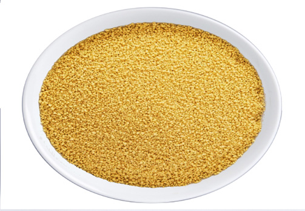

Food and Human Nutrition
Form Two
thin, long and rounded pasta. Apart from wheat, vermicelli can also be made from rice and it is known as rice vermicelli or rice noodles. Figure 2.2 shows different types of pasta.


Macaroni
Spaghetti


Wheat vermicelli
Couscous
Figure 2.2: Different types of pasta
Exercise 2.2
(i) Compare and contrast between white flour and brown wheat flour.
(ii) Why overweight individuals are advised to consume meals made with wholemeal flour.
Category of flour according to the amount of gluten
Gluten is a protein primarily found in wheat. It is also available in some other cereals in very small quantities. The strength of the flour is determined by the amount of gluten it contains. Based on the amount of gluten, wheat flour can be categorised into three types, strong flour, medium flour and soft flour.
(i) Strong flour
Strong flour has a high gluten content between 12 and 14 percent. This amount of gluten makes the dough more elastic and lighter, resulting in an airier texture product during baking. It is also known as bread flour. This type of flour is normally used to make bread, buns and dinner rolls. Strong flour can be converted to soft flour